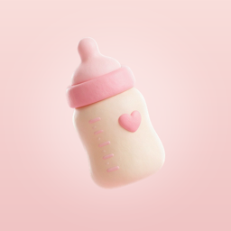

Baby On TrackPrivacybeleid
In het kort
- Alles wat je logt staat op je iPhone en in je eigen iCloud. Wij kunnen het niet zien.
- Je deelt alleen met de mensen die jij uitnodigt, via iCloud van Apple.
- Geen account bij ons, geen reclame, geen tracking, geen analysetools.
Wie we zijn
Baby On Track is een iPhone-app om voedingen, slaap, luiers en groei van je baby bij te houden, samen met je partner. Vragen over privacy of de app kun je sturen naar tha_ultima@hotmail.com.
Wat je in de app bewaart
- Over je kind: naam, geslacht, geboortedatum, gewicht, lengte, hoofdomtrek en een foto als je die kiest.
- Wat je logt: voedingen, kolven, slaap, luiers, temperatuur, vitamine D, bad, taken, tandjes, mijlpalen, vaccinaties en herinneringen met foto’s of video’s.
- Je instellingen, timers en je naam zoals die bij een voeding staat.
Dit wordt bewaard op je iPhone en in de privé-iCloud-opslag van je eigen Apple Account (CloudKit), zodat het een reservekopie heeft. Wij hebben geen toegang tot je iCloud. Die opslag valt onder het privacybeleid van Apple.
Delen met je gezin
Nodig je iemand uit, dan deelt de app je gezinsgegevens via iCloud-delen van Apple met precies die personen. Zij zien en loggen dan dezelfde gegevens op hun eigen iPhone. Je kunt het delen altijd stoppen in de app onder Gezin.
Meldingen van voedingen
Staat “Meldingen van voedingen” aan (standaard uit), dan krijgt je partner een melding als jij een voeding logt. Daarvoor bewaart de app kort een bericht in de openbare database van de app in iCloud. Dat bericht bevat alleen een anonieme iCloud-code voor je gezin en je telefoon (zonder naam of e-mailadres), en de tekst van de melding, versleuteld met een sleutel die alleen jullie telefoons hebben (AES-GCM). Namen en hoeveelheden zijn dus niet leesbaar voor Apple, voor ons of voor anderen. Het bericht wordt na een paar minuten weer gewist.
Toestemmingen
| Toestemming | Waarvoor |
|---|---|
| Meldingen | Timers (zoals vitamine D), de voedingsherinnering en, als je dat aanzet, meldingen van voedingen. Timers worden op je iPhone zelf ingepland. |
| Foto’s | Alleen de foto’s of video’s die je zelf kiest, voor je kind of het herinneringenboek. De app ziet de rest van je fotobibliotheek niet. |
| iCloud | Reservekopie en delen met je gezin, zoals hierboven. |
Je kunt dit altijd wijzigen in de app Instellingen van je iPhone.
Toegangsscherm en widgets
Widgets op je beginscherm en toegangsscherm tonen bijvoorbeeld de laatste voeding. Iedereen die je telefoon ziet, kan dat dus ook zien.
Aankopen
De ontgrendeling wordt via Apple betaald. Wij krijgen geen betaalgegevens. De app slaat in je gezinsgegevens alleen op dat er ontgrendeld is, zodat de andere telefoons ook ontgrendeld worden.
Wat we niet doen
- Geen account of registratie bij ons.
- Geen reclame en geen code van reclame- of analysebedrijven.
- Geen tracking over apps of websites heen.
- Geen verzameling, verkoop of doorgifte van gegevens.
Exporteren (CSV), feedback sturen, een gids openen of het alarmnummer bellen gebeurt alleen als jij dat doet, met de app of website die je zelf kiest.
Je gegevens verwijderen
- In de app: Instellingen → Alles wissen verwijdert de kinderen en logs van deze iPhone.
- De iCloud-kopie: Instellingen van je iPhone → je naam → iCloud → Opslag beheren → Baby On Track → Verwijder gegevens.
- Ben je uitgenodigd, dan stop je met delen onder Gezin in de app.
Gezondheid
De inzichten, groeicurves (WHO) en gidsen zijn algemene informatie en geen medisch advies. Twijfel je, vraag het je arts, verloskundige of het consultatiebureau.
Kinderen
Baby On Track is gemaakt voor ouders. Gegevens over je kind blijven op jullie telefoons en in jullie iCloud, en worden door ons niet verzameld.
Hulp nodig?
Werkt iets niet zoals verwacht, of heb je een idee? Mail naar tha_ultima@hotmail.com. Vermeld je iPhone-model en iOS-versie, dat helpt.
Wijzigingen
Als dit beleid verandert, passen we de datum bovenaan aan. Bij belangrijke wijzigingen vermelden we dat ook in de app-update.
Privacy Policy
In short
- Everything you log stays on your iPhone and in your own iCloud. We can't see it.
- You share only with the people you invite, through Apple's iCloud.
- No account with us, no ads, no tracking, no analytics.
Who we are
Baby On Track is an iPhone app for keeping track of your baby's feeds, sleep, nappies and growth, together with your partner. Send questions about privacy or the app to tha_ultima@hotmail.com.
What you keep in the app
- About your child: name, sex, birth date, weight, length, head size and a photo if you pick one.
- What you log: feeds, pumping, sleep, nappies, temperature, vitamin D, baths, tasks, teeth, milestones, vaccines and memories with photos or videos.
- Your settings, timers, and your name as it appears on a feed.
This is kept on your iPhone and in the private iCloud storage of your own Apple Account (CloudKit), so it has a backup. We have no access to your iCloud. That storage follows Apple's privacy policy.
Sharing with your family
When you invite someone, the app shares your family's data with exactly those people through Apple's iCloud sharing. They then see and log the same data on their own iPhone. You can stop sharing any time under Family in the app.
Feed notifications
When “Feed notifications” is on (it's off by default), your partner gets a notification when you log a feed. For this, the app briefly keeps a message in the app's public database in iCloud. The message holds only an anonymous iCloud code for your family and your phone (no name or email address), and the notification text, locked with a key that only your family's phones have (AES-GCM). Names and amounts can't be read by Apple, by us or by anyone else. The message is deleted again after a few minutes.
Permissions
| Permission | What it's for |
|---|---|
| Notifications | Timers (like vitamin D), the feed reminder and, if you turn them on, feed notifications. Timers are scheduled on your iPhone itself. |
| Photos | Only the photos or videos you pick yourself, for your child or the memory book. The app doesn't see the rest of your library. |
| iCloud | Backup and sharing with your family, as above. |
You can change these any time in the Settings app on your iPhone.
Lock screen and widgets
Widgets on your Home Screen and Lock Screen show things like the last feed. Anyone who sees your phone can see this too.
Purchases
The unlock is paid through Apple. We receive no payment details. The app only notes in your family's data that it's unlocked, so the other phones unlock too.
What we don't do
- No account or sign-up with us.
- No ads and no code from advertising or analytics companies.
- No tracking across apps or websites.
- No collecting, selling or passing on of data.
Exporting (CSV), sending feedback, opening a guide's link or calling the emergency number happen only when you do it, with the app or website you choose.
Deleting your data
- In the app: Settings → Erase removes the children and logs from this iPhone.
- The iCloud copy: iPhone Settings → your name → iCloud → Manage Storage → Baby On Track → Delete Data.
- If you were invited, stop sharing under Family in the app.
Health
The insights, growth charts (WHO) and guides are general information, not medical advice. If in doubt, ask your doctor, midwife or health visitor.
Children
Baby On Track is made for parents. Data about your child stays on your phones and in your iCloud, and isn't collected by us.
Need help?
Something not working as expected, or have an idea? Email tha_ultima@hotmail.com. Mentioning your iPhone model and iOS version helps.
Changes
If this policy changes, we update the date at the top. For important changes, we also mention it in the app update notes.